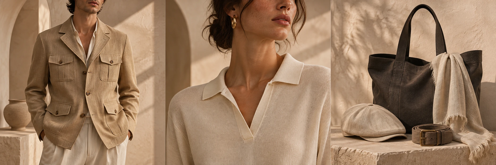
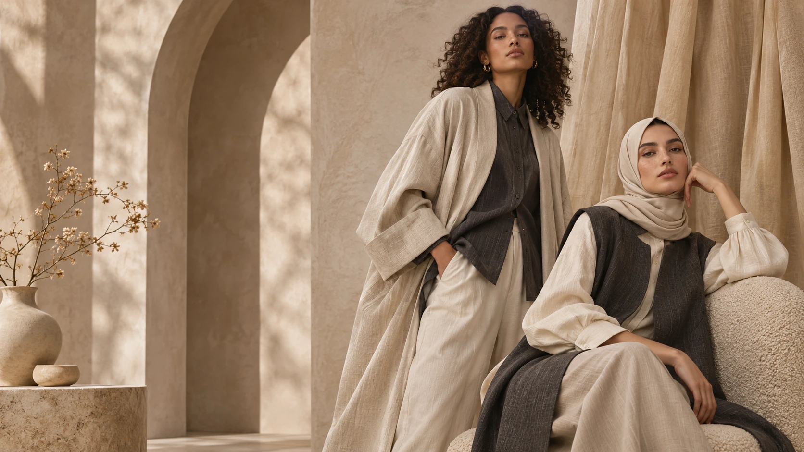

01Everyday outerwear
Relaxed layers in warm neutral tones.

THE EVERYDAY EDIT
A considered wardrobe for the rhythm of everyday life.
Explore the editA SLOWER APPROACH
Quiet tones, textured materials and relaxed silhouettes. A collection shaped by everyday movement, with enough character to make each piece feel personal.
THE COLLECTION
Explore the season through three considered categories.

01Relaxed layers in warm neutral tones.
Clean, simple silhouettes.
Functional details, quietly expressive.